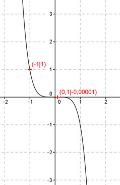

Aufgabe 37 Ergänzen Sie die Wertetabelle für den Graphen: y = -x5 x -1 0,1 y 1 -0,00001  f(x) = 1 eingesetzt: 1 = -x5 | *(-1) -1 = x5 x = −15 = -1 f(x) = - 0,00001 eingesetzt: - 0,00001 = -x5 | *(-1) 0,00001 = x5 x = 0,000015 = 0,1
Aufgabe 37 Ergänzen Sie die Wertetabelle für den Graphen: y = -x5 x -1 0,1 y 1 -0,00001
